Per-Product Dual Approval Gate
Incipient Enterprise SuitePer-Product Dual Approval Gate on Sales Orders
Enforce Customer Sign-Off and Sales Manager Approval on orders with restricted or high-value items, routing them into Waiting Approval before fulfillment and inventory release.
Need Setup Assistance?
Free pre-sales consultation and lifetime support for every installation.
Contact Technical SupportBuilt for Sales Risk Mitigation
Eliminate unauthorized commitments and premature stock dispatch with automated dual sign-off gates
Customer Sign-Off
Client AuthorizationRequire explicit customer approval and track sign-off date and recorder before custom or high-risk products proceed to fulfillment.
Manager Gate
Security EnforcedStrict security group controls prevent unauthorized confirmations—only authorized Sales Managers can release restricted orders.
Fulfillment Hold
Zero Stock LeakageOrders enter a dedicated Waiting Approval state, strictly halting warehouse pickings and inventory reservations until all gates clear.
The Business Transformation
How Per-Product Dual Approval Gate prevents costly fulfillment errors
Default Odoo Limitation
- ✕ Sales orders confirm immediately upon clicking Confirm, creating stock pickings instantly.
- ✕ No native mechanism to halt high-risk, custom-engineered, or expensive products for customer sign-off.
- ✕ Sales representatives can commit to high-value orders without mandatory sales management validation.
Automated Dual Approval Gate
- ✓ Orders containing restricted items automatically route to a dedicated "Waiting Approval" status.
- ✓ Stock reservation and warehouse pickings are completely held until all required gates are approved.
- ✓ Rigid security enforcement ensures only designated Sales Managers can grant manager release.
Comprehensive Feature Suite
12 Core capabilities engineered for sales control and compliance
Per-Product Flags
Configure customer sign-off or manager approval requirements directly on individual product templates without hardcoding.
Dedicated Holding State
Orders containing restricted products route seamlessly into a native "Waiting Approval" state instead of confirming immediately.
Zero Premature Pickings
Completely blocks warehouse delivery orders (stock pickings) and inventory reservations until all required gates are passed.
Customer Sign-Off Gate
Enforces client written or verbal sign-off recording before proceeding, logging the user and timestamp.
Sales Manager Gate
Strict backend permission check ensures only users with Sales Manager rights can grant managerial approval.
Dual Gate Support
Combine both Customer Sign-Off and Manager Approval on high-value products; order auto-confirms only after both clear.
Automated Auto-Confirm
Once the final pending approval gate is granted, the sales order instantly confirms and triggers fulfillment flows.
Audit Trail & Chatter Log
Every gate transition, approval timestamp, approving officer, and restricted product list is permanently logged in chatter.
One-Click Rejection
Instantly reject unapproved or risky orders, cancelling the quotation and notifying team members with detailed audit records.
Dynamic Approval Tab
A clean "Approval Gate" tab dynamically appears only when an order contains gated products, showing visual badge statuses.
Native Odoo 19 Compatible
100% compatible with Odoo 19 Community Edition, Enterprise Edition, and Odoo.sh cloud deployments.
Zero External Dependencies
Built strictly with core Odoo ORM methods with no third-party libraries or recurring subscription dependencies.
Step-by-Step Visual Walkthrough
How Per-Product Dual Approval Gate operates in Odoo
Navigate to Users & Companies
Access system user management via Quick Search (Command Palette) under Settings / Users & Companies / Users.
Configure permissions to test role-based approval controls between regular sales representatives and managers.
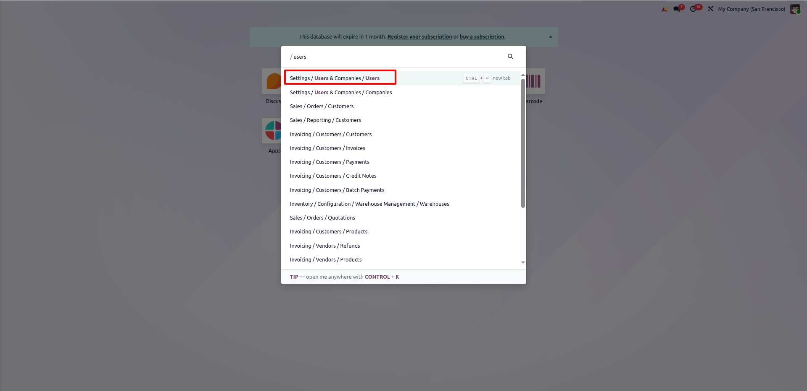
Configure Standard Sales User (User-1)
Set User-1 access right to standard sales level ("Sales: User: All Documents").
Ensures standard salespersons can create quotations but cannot bypass manager approval gates.
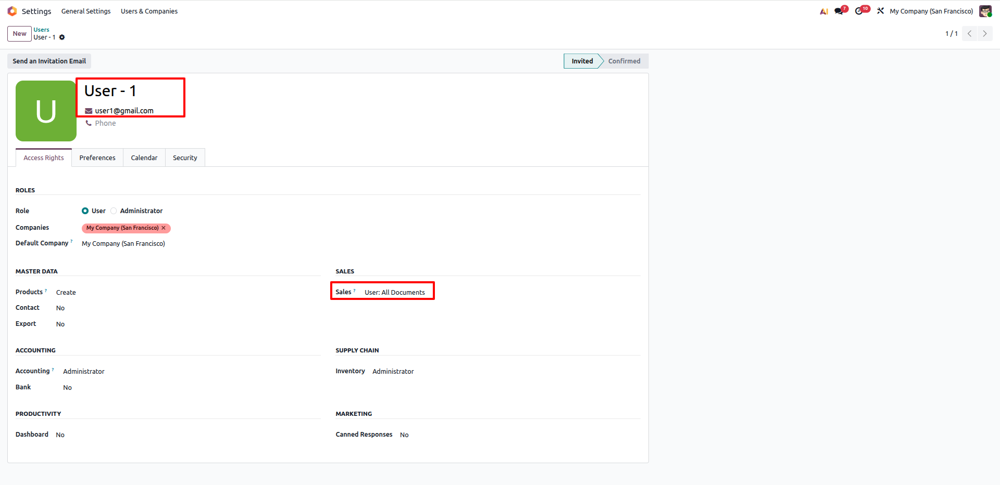
Configure Sales Manager User (User-2)
Set User-2 access right to management level ("Sales: Administrator").
Grants authority to grant Sales Manager Approval and release orders from the Waiting Approval state.
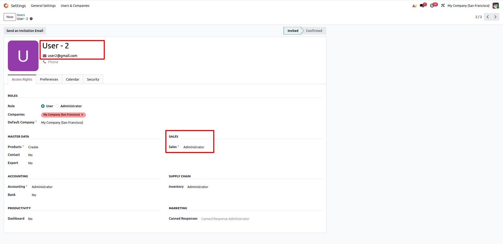
Navigate to Products Menu
Open the product catalogue via Sales / Products / Products to configure per-product approval gates.
Easily access and manage approval settings directly on product template forms.
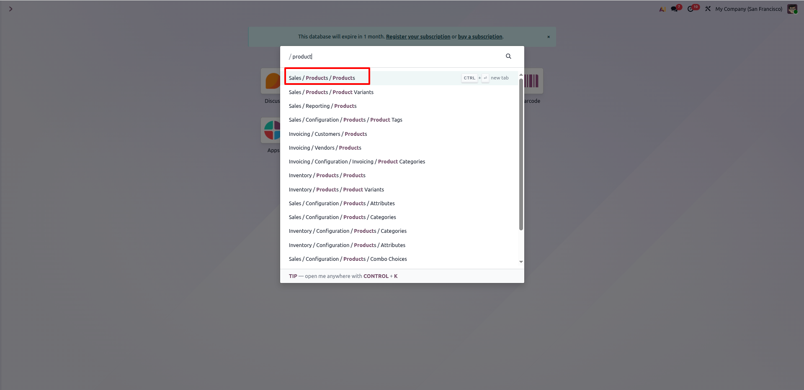
Product 1: Requires Customer Sign-Off
Enable "Requires Customer Sign-Off" under Dual Approval Gate Requirements on Product 1.
Any quotation containing Product 1 will mandate customer sign-off before confirmation.
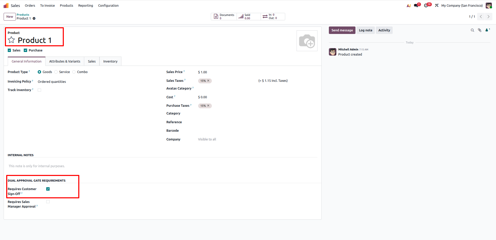
Product 2: Requires Sales Manager Approval
Enable "Requires Sales Manager Approval" under Dual Approval Gate Requirements on Product 2.
Enforces administrative manager sign-off before this product can be confirmed and fulfilled.
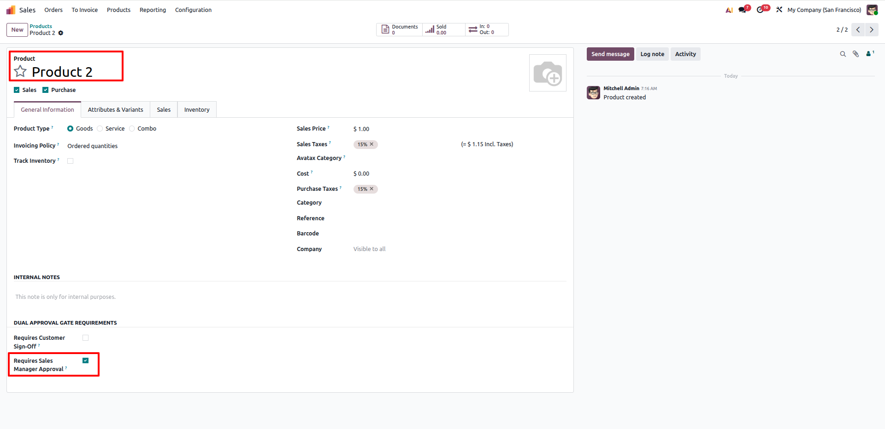
Product 3: Dual Gate (Customer + Manager)
Enable BOTH "Requires Customer Sign-Off" and "Requires Sales Manager Approval" on Product 3.
High-risk or bespoke products require dual validation from both customer and management.
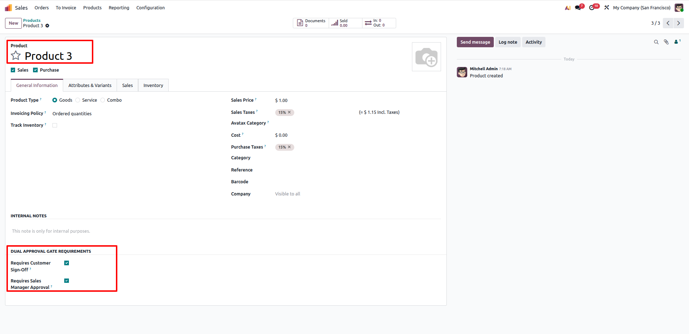
Product 4: Standard Product (No Gates)
Leave both approval gate checkboxes unchecked on Product 4.
Standard catalog items flow straight through the default confirmation process without holding.
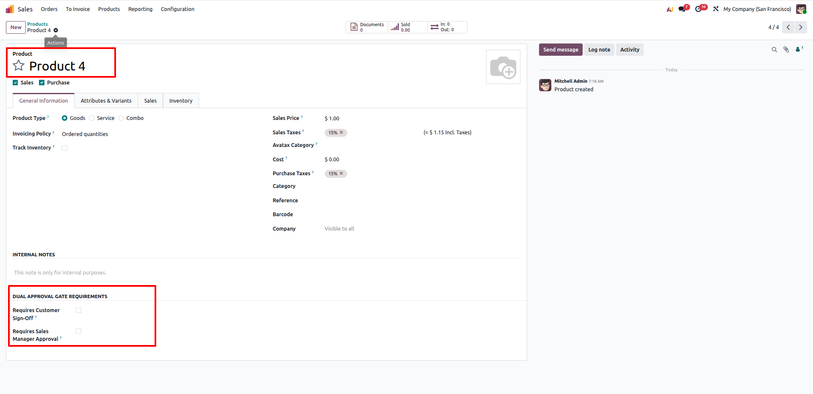
Navigate to Sales Orders
Navigate to Sales / Orders / Orders to create and verify test quotations across scenarios.
Test standard orders, single-gate orders, dual-gate orders, and rejection workflows.
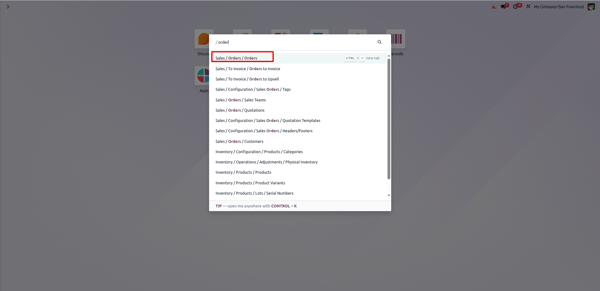
Standard Order Direct Confirmation (S00030)
Confirming an order with Product 4 immediately transitions to "Sales Order" with Delivery created.
No approval delays or holding state for routine, non-restricted products.
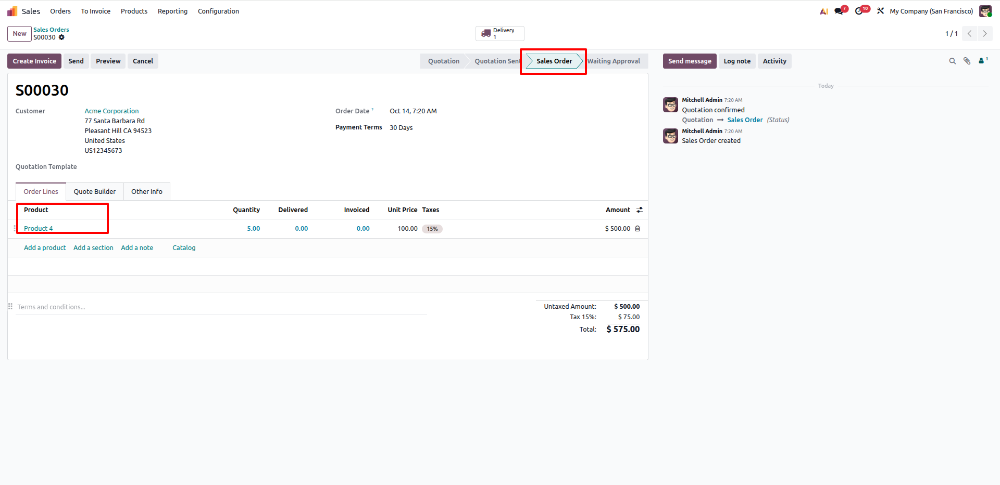
Waiting Approval Triggered (S00031)
Confirming S00031 with Product 1 routes order to "Waiting Approval" and shows "Customer Sign-Off" button.
Delivery order creation is strictly blocked, and the chatter records pending approval gates.
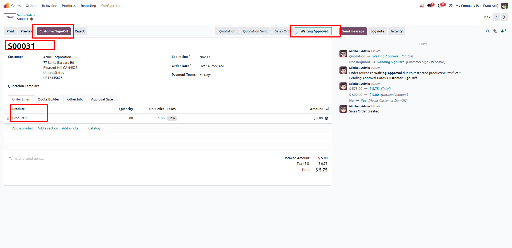
Customer Sign-Off Recorded & Auto-Confirm (S00031)
Clicking "Customer Sign-Off" marks the status as "Signed Off" with user and timestamp recorded.
Because all required gates are fulfilled, the order auto-confirms to Sales Order and releases Delivery #1.
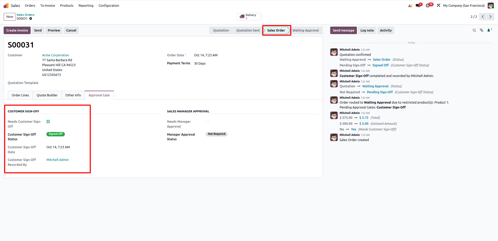
Manager Gate Order in Waiting Approval (S00033)
Confirming S00033 with Product 2 routes into "Waiting Approval" with the "Manager Approve" button active.
Standard salespeople cannot confirm; the button is strictly protected by the sales manager security group.
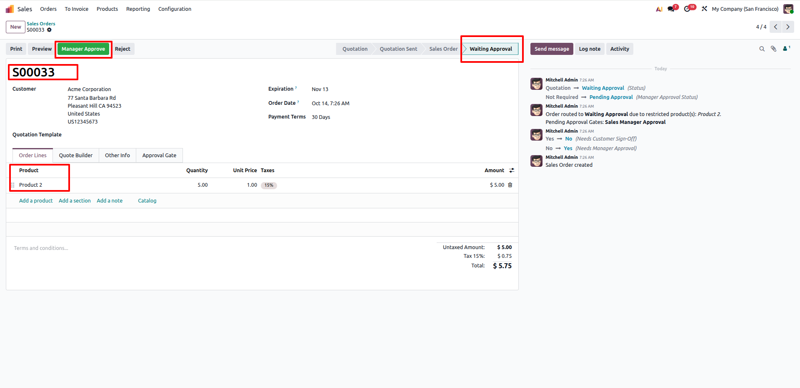
Manager Approval Granted & Confirmed (S00033)
Sales Manager clicks "Manager Approve", logging manager name, date, and "Approved" status badge.
Order automatically confirms into "Sales Order" state and generates warehouse pickings.
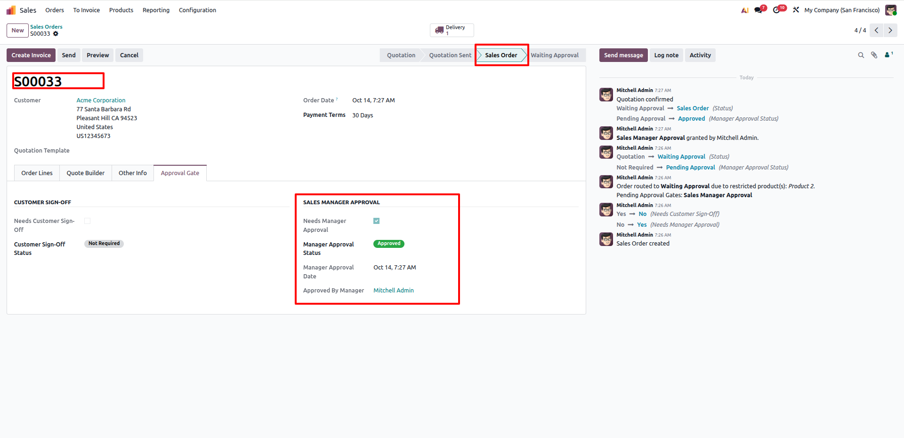
Dual Gate Order in Waiting Approval (S00035)
Order S00035 with Product 3 requires BOTH Customer Sign-Off and Sales Manager Approval.
Chatter and Approval Gate tab display both approval gates pending simultaneously.
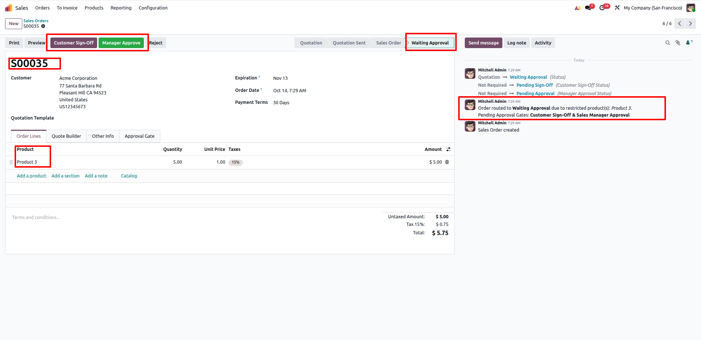
Partial Sign-Off: Still Waiting Approval (S00035)
Clicking "Customer Sign-Off" approves customer gate, but the order stays in "Waiting Approval".
Stock pickings remain completely blocked until the Sales Manager also provides approval.
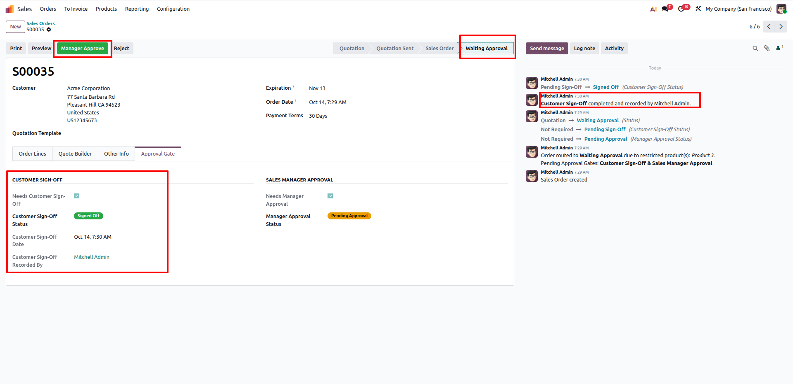
Full Dual Approval Satisfied (S00035)
Manager clicks "Manager Approve". With both gates now satisfied, the order instantly auto-confirms.
Transitions to "Sales Order" state and creates warehouse fulfillment pickings.
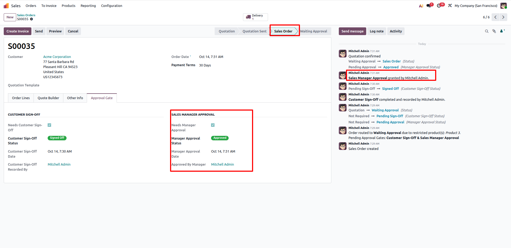
Approval Rejection Flow (S00036)
Clicking the "Reject" button transitions the order immediately into "Cancelled" status.
Approval statuses are updated to "Rejected" (Red Badge) and a clear rejection audit is posted in Chatter.
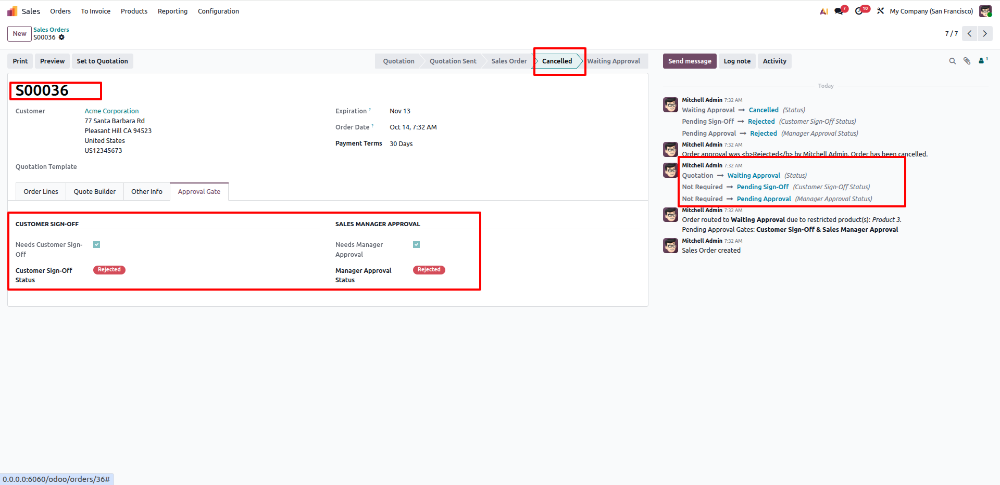
Frequently Asked Questions
Click any question below to expand or collapse details